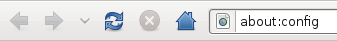
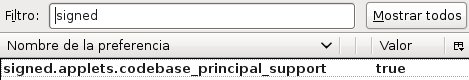
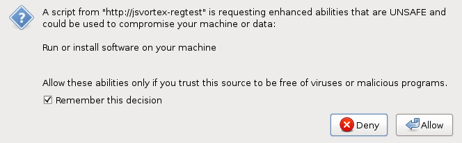

Firefox browser configuration
Firefox jsVortex support uses mozilla sockets API provided by several interfaces
that are restricted for security reasons. Thus, you have to enable
firefox to ask the user to accept those components to be used. This is
done following the next steps:
- Type in your firefox brower the following url: about:config and accept the warning to enter inside firefox user configuration.

- Now search for "signed" keyword and double click on "signed.applets.codebase_principal_support" to leave it as true.

- Now the first time that the user access to a jsVortex enabled page
will be asked to allow accessing to priviledge API. This dialog must
be accepted, setting "rembember this decision for this site".

Advanced configuration
Enabling signed.applets.codebase_principal_support is
problematic because may enable other sites to ask for permission that
may be granted by unwary users. The following are the steps to keep
permissions granted having disabled
signed.applets.codebase_principal_support:
- Once you have granted the site using jsVortex to acquire its
permissions to run, you have to edit the file prefs.js
located in you profile. See the following document to find your
profile location.
- Having the brower stopped, search for the lines that have granted
permissions to the particular site. They should look like:
user_pref("capability.principal.codebase.p1.granted", "UniversalXPConnect");
user_pref("capability.principal.codebase.p1.id", "http://jsvortex-regtest");
user_pref("capability.principal.codebase.p1.subjectName", "");
- Now update them by replacing ".codebase." with
".codebaseTrusted.", leaving them as follow:
user_pref("capability.principal.codebaseTrusted.p1.granted", "UniversalXPConnect");
user_pref("capability.principal.codebaseTrusted.p1.id", "http://jsvortex-regtest");
user_pref("capability.principal.codebaseTrusted.p1.subjectName", "");
- Now you can safely disable
signed.applets.codebase_principal_support as described in
previous section.
![[content begin]](images/content-begin.png)
![[content end]](images/content-end.png)